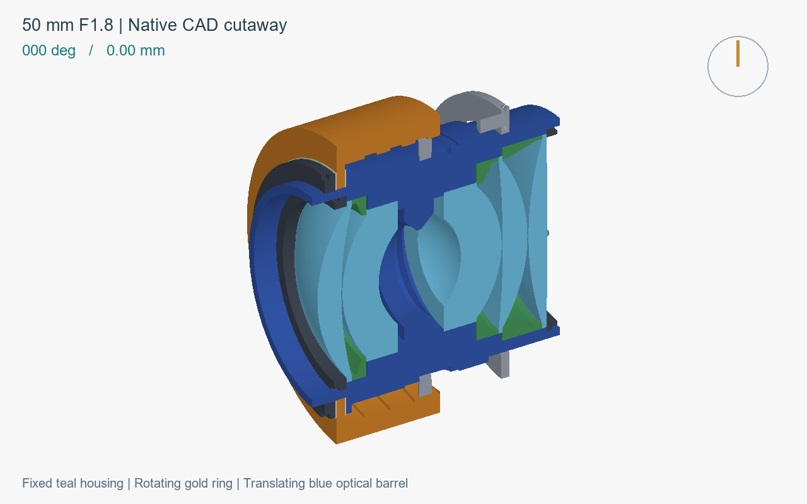

对焦机构实验 · 双高斯 50 mm F1.8
转动调焦环，看整组镜片怎样移动
青色外壳固定，金色调焦环旋转并前移，蓝色内筒带着镜片沿光轴移动。下面的动画来自原生 CAD 在不同姿态下的真实截面。

调焦环：旋转＋平移光学内筒：只平移固定外壳：不动
6 mm 导程 · 270° 转角 · 4.5 mm 行程；每帧相隔 15°。固定虚线为安装基准，圆盘指针表示调焦环转角。
01 / 螺旋副产生行程
调焦环的内螺旋牙与固定壳的外螺旋牙啮合，把手动转角转为轴向位移。
02 / 止推连接带动内筒
调焦环前端凸缘由两片垫片、保持环和内筒凸缘捕获，允许相对旋转，同时向前推、向后拉。
03 / 轴向直槽止转
固定壳上的导向件伸入内筒直槽，使镜片保持朝向。直槽不负责把旋转转换为行程。
这是独立的手动对焦机构 demo，不是已完成相机适配的量产镜头。0° 尚未标定为无穷远；反光镜避让、通光、预紧、公差和回差仍需校核。动画表现名义几何运动，不是光学成像或应力仿真。